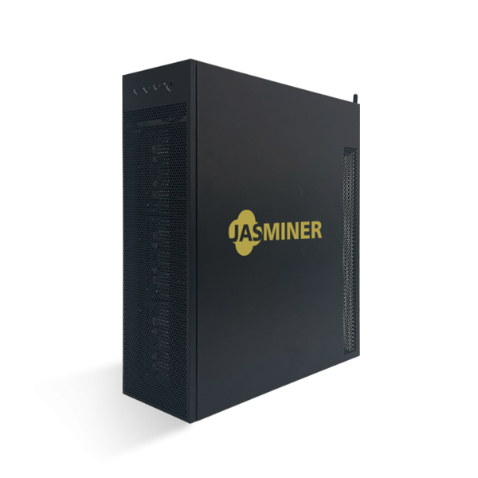
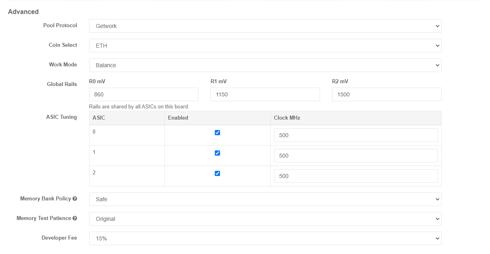

Custom Jasminer X16-Q / Q Pro firmware with ETHW and overclocking support
Jasminer X16-Q builds with ASIC clock tuning and voltage settings.
Tested on 50+ miners. Up to 7x ETHW mining profits.
X16-P version in development.

Tuning controls + ETHW support.
A focused custom build for miners who want direct control over frequency, voltage, ASIC status, and memory checks.
Overclocking control
- Advanced voltage control
- Advanced frequency control
- Enable / disable ASICs
- Memory check settings
Be patient with overclocking settings. Test changes gradually and watch temperature and reject rate.
Trial version
15% dev fee included.
Trial builds include a 15% developer fee. The fee can be removed as a paid upgrade for miners that want the full build.
Custom build request
Request a free build
WiFi and wired MAC addresses are different. Send both if possible, or the unused connection may stop working while this firmware is installed. Wired MAC: connect the miner with a LAN cable, reboot, then check the dashboard. WiFi MAC: connect the miner to WiFi, reboot, then check MAC on the dashboard.
